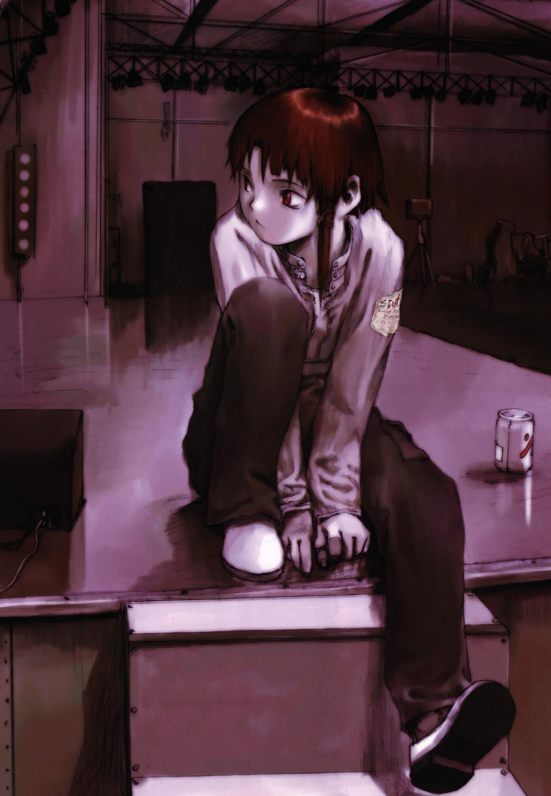

« JUDE + 23 + MALE »
 いない or 'inai' meaning 'not here' or 'to not exist'. Just my site name because
Inai-san is my favorite Nijiura Maid.
This site (my second- I first joined Jan. 2021) was previously focused solely for horror content, but has expanded to just be a personal site for whatever else I want. :)
I enjoy a variety of games (which will be posted about), metal, reading, Gunpla, art, and likely other shit as well, because I am a fascinating man of many secrets. (I am not.)